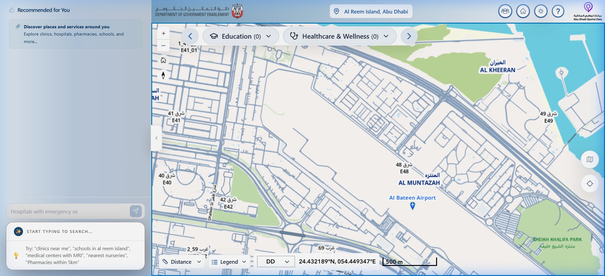
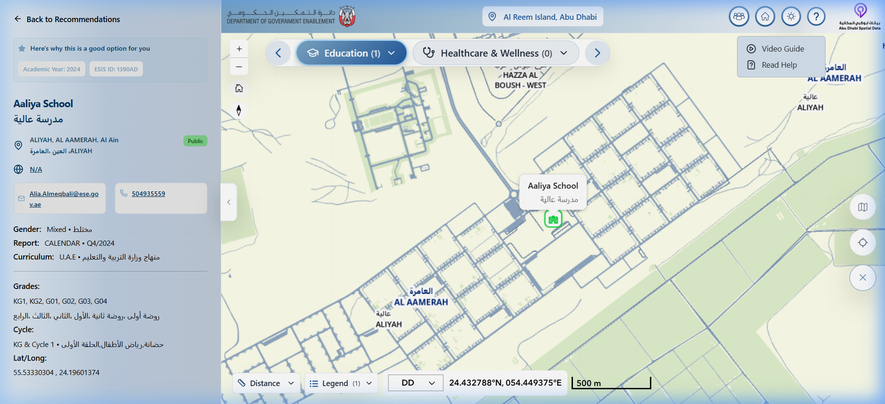

Smart Map
Redesigning a UAE government spatial platform that serves two fundamentally different users — residents discovering city services, and administrators managing complex geospatial datasets — through a single, unified interface.
Context
SDI Smart Map is Abu Dhabi's official spatial data infrastructure portal. It consolidates government spatial datasets — healthcare facilities, schools, transport networks, utilities, land use — into a single interactive map application used by over 2 million residents and thousands of government employees.
The platform has two core surfaces: a public-facing discovery interface where residents search for hospitals, schools, and services by proximity and category — and an administrative GIS dashboard where government data officers manage layers, configure spatial datasets, run analytics, and generate reports.
I owned research, interaction design, and visual design across both experiences — from the initial category landing to the deep layer management system.
The Problem
One interface, two completely different mental models. That was the core design challenge.
For Residents
- The layer system made sense to engineers but confused everyone else — 9 ungrouped categories, all visible at once, with toggle states that looked identical whether active or not
- No intent-based navigation. A resident looking for "nearest hospital with available beds" had no path to that answer
- The most valuable data — live bed availability, real-time service status — was buried so deep that none of the 4 users in our research sessions found it without being told it existed
- Zero progressive disclosure. Full-density interface on first load created immediate cognitive overload
For Administrators
- Layer management required navigating between 3 separate panels to configure a single dataset
- No visual distinction between published/draft/archived layers
- Spatial analytics tools were hidden behind nested menus with no keyboard shortcuts or workflow memory
- The same simplified controls designed for residents were frustrating professionals who needed precision and speed

Intent-based category entry: Education, Healthcare, Transport, Business — residents start with purpose, not tools
Research & Discovery
Before touching any design tool, I spent the first three weeks in deep research:
- User observation sessions — Watched 4 residents and 3 administrators use the existing platform. Documented where they paused, backtracked, and gave up
- Competitive analysis — Audited 6 government spatial platforms (Singapore OneMap, UK OS Maps, Dubai REST, Abu Dhabi Open Data) to map interaction patterns and information architectures
- Heuristic evaluation — Systematically scored the existing interface against Nielsen's 10 heuristics. Scored 3.2/10 on "Recognition over recall" and 2.8/10 on "Visibility of system status"
- Journey mapping — Created separate journeys for residents (service discovery) and administrators (data management), identifying 7 friction points where the two experiences collided
- Data layer audit — Catalogued all 40+ spatial datasets, their update frequencies, access patterns, and user expectations to inform the information architecture
Key insight: The real failure wasn't visual clutter — it was invisible system state. Users had no idea what the map was currently showing them. A layer could be active or inactive and look identical. That's not a visual problem — it's an architectural one.
Design Process
Architecture Decisions
The first and most critical decision: split the experience into two modes. Not two separate apps — two modes within the same platform, sharing the same map engine but surfacing fundamentally different tools.
- Discovery Mode (Residents) — Intent-based category navigation, NLQ (Natural Language Query) search, "Recommended for You" results, simplified controls
- Professional Mode (Administrators) — Full layer management, spatial analytics, measurement tools, dataset configuration, and report generation
Public Interface Redesign
- Replaced 9 ungrouped layers with intent-based category cards (Healthcare, Education, Transport, Business, etc.) — users start with purpose, not tools
- Added Natural Language Query search — residents can type "nearest hospital with emergency" instead of navigating layer trees
- Built a "Recommended for You" sidebar that surfaces contextual results based on location and selected category
- Designed hierarchical filtering: category → sub-category (Public/Private Schools) → individual entity — progressive disclosure at every level
Dashboard & Admin Interface
- Restructured the layer panel from 9 flat categories into 3 semantic groups with distinctly visible toggle states (active = filled + colored border, inactive = outlined + muted)
- Added status badges to every layer: Published / Draft / Archived / Stale — administrators can scan status at a glance
- Built a spatial analytics toolbar with measurement tools (Distance, Area), legend controls, and basemap switching directly accessible from the map surface
- Added bilingual support (English/Arabic) and dark mode toggle for extended use sessions


Left: Core map interface with NLQ search and recommendation sidebar. Right: Contextual detail panel with entity attributes — users never lose spatial context.
Solution
The shipped platform delivers two connected experiences through a single, unified design language:
Discovery Interface (Public)
Residents enter through an intent-based landing grid — no map loaded until they choose a category. This transforms the interaction from "here's a map, figure it out" to "what are you looking for?" The map then loads with relevant data pre-filtered, recommendations pre-populated, and a clear drill-down path from category to individual entity.
Key innovation: The NLQ search bar accepts natural language queries ("nearest school accepting grade 5") and returns ranked, contextual results alongside a list-based sidebar that functions as a results dashboard — bridging spatial exploration with structured data consumption.
Administration Dashboard
Government data officers access a professional-grade GIS interface with full layer management, measurement tools, legend controls, and dataset configuration. The same map engine powers both experiences, ensuring data consistency while surfacing appropriate complexity for each audience.
- Layer Manager — Grouped categories with visual status indicators, bulk toggle, and search-within-layers
- Analytics Suite — Distance measurement, area calculation, heatmap overlays, and spatial clustering
- Report Generation — Export filtered spatial data as structured reports for government workflows
- Configuration Panel — Layer publishing, access control, update frequency settings, and metadata management

Administrative interface: full layer control, spatial analytics, and GIS tools for government data officers
Impact
9 → 3
Flat layer categories restructured into semantic groups
1 Click
To reach live bed availability (previously unfindable)
2 Modes
Split public discovery + admin GIS into distinct experiences
NLQ
Natural language search replaced layer tree navigation

Key screens from the shipped platform — landing grid, map interface, detail panel, and layer management
What I Learned
I went in thinking the problem was visual clutter. The research showed the real failure was invisible system state — users had no idea what the map was currently showing them. That's a fundamentally different problem, and it changes what you design.
The hardest design decision was the dual-mode architecture. It doubled the design surface but halved the complexity for each audience. In hindsight, it was the only sustainable solution. Trying to serve government GIS professionals and residents through the same UI controls is a fundamentally broken premise — no amount of polish can fix a structural mismatch.
One thing I'd do differently: we locked the layer architecture before properly testing with administrator users. Their needs diverged more than expected, which required late-stage compromises. If I ran it again, I'd start with parallel testing tracks for both audiences from week one.
The best spatial UX is invisible spatial UX. When a resident types "nearest hospital" and gets an answer in 3 seconds without knowing they just queried 40+ geospatial datasets, that's the design working.